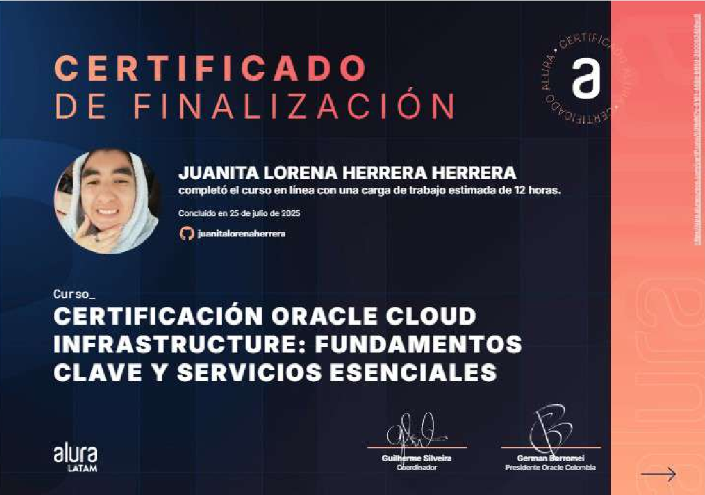
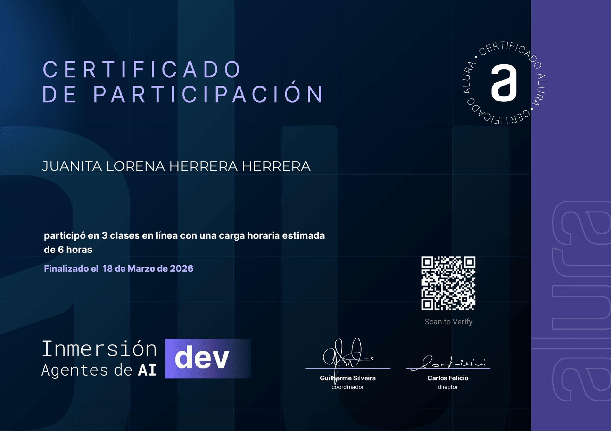
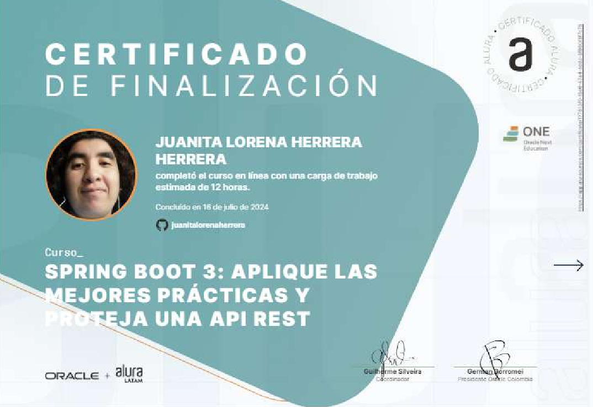

Frontend con React y TypeScript
Interfaces claras, responsivas y centradas en las personas.
Desarrolladora frontend junior
OCI AI Foundations Associate · 2026
Código con empatía, tecnología con propósito. Convierto ideas en experiencias digitales útiles, accesibles y pensadas para las personas.

Lo que aporto
Una combinación de criterio técnico, empatía y ganas de construir soluciones que sí importan.
Interfaces claras, responsivas y centradas en las personas.
Mi experiencia de voluntariado inspira proyectos como AmbuAlert.
Colaboración frontend en el proyecto Sonterry.
Apoyo en tareas digitales y de atención en Kronosoft.
Formación en Oracle Cloud e inmersión en agentes de IA.
Curiosidad y práctica continua para crecer como desarrolladora.
Selección de trabajo
Ideas convertidas en productos digitales, desde la primera interfaz hasta la colaboración en equipo.
Más experimentos
Prácticas y ejercicios de lógica, diseño e interacción.
Trayectoria profesional
Experiencia con clientes, comunicación y desarrollo frontend.
Apoyo en captación de clientes y tareas administrativas, además de colaborar en desarrollo frontend y diseño para fortalecer la presencia digital de la empresa.
Herramientas de trabajo
Tecnologías y herramientas que forman parte de mi práctica diaria.
Mi historia
Después de dos años de voluntariado en una fundación, encontré en el desarrollo web otra forma de servir: construir herramientas digitales que respondan a necesidades reales.
Me entusiasma crear interfaces accesibles y trabajar con equipos que ponen a las personas en el centro. Hoy sigo aprendiendo y llevando esa vocación a proyectos como AmbuAlert.
Hablemos de una ideaFormación continua
Una selección de credenciales y formación relacionada con cloud, IA y desarrollo.
Oracle Cloud Infrastructure
Oracle Cloud Infrastructure

Oracle Cloud Infrastructure

Alura · IA

Java · Spring
El siguiente paso
¿Tienes un proyecto, una idea o una oportunidad? Me encantará conversar.
¡Conversemos! juanitaherrera846@gmail.com